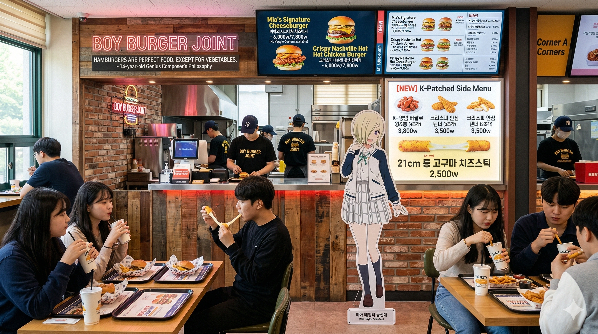

HBNU MASTER DINING GUIDE (ALL MENUS & WEEKLY TIMETABLE)
효빈대학교 전 캠퍼스 다이닝 메뉴판 및 주간 식단표
제2번 건물 · 교내트램 A선 토목대 복지관역(A06)
학생복지회관 1층 대형 푸드코트 (2026 특화 개편 5대 코너 전 메뉴)
"총학생회의 전 메뉴 500원 인하 업적과 서브컬처 동아리 연합이 탄생시킨 가성비의 제왕" · 운영시간: 10:30 ~ 19:30
제4번 건물 · 도시철도 2호선 효빈대역 앞
🔥 수요일 '한방 야들 수육' 특식 날은 11:30 오픈런 필수!
학생복지타운 자율 한식뷔페 주간 식단표
• 이용 가격: 중·석식 6,000원 (현금/카드/효빈페이 동일 · 조식 '엠마의 식탁'은 1,000원) | 시간: 중식 11:30~14:00 / 석식 17:00~19:00
• 상시 기본 코너: 신선 그린샐러드 바, 배추김치, 셀프 온육수 잔치국수 무한리필 코너 상시 가동
| 요일 | 밥 / 국 | 메인 요리 (무한리필) | 서브 반찬 (4찬 구성) | 디저트/음료 | 영양사 코멘트 및 이용 팁 |
|---|---|---|---|---|---|
| 월요일 03/23 |
흑미/백미밥 맑은 콩나물국 |
간장 돼지불고기 | 매콤 두부조림, 수제 계란말이, 무생채, 상추쌈 | 시원한 매실차 | 월요병 치유 고기 파티 (계란말이 조기 소진 시 즉시 추가 조리) |
| 화요일 03/24 |
기장/백미밥 차돌 된장찌개 |
춘천식 철판 닭갈비 | 오징어 해물파전, 미역줄기볶음, 깍두기, 양배추 찜 | 얼음 동동 식혜 | 배식 트레이에서 닭고기만 골라 담지 않도록 배려 바랍니다. |
| 수요일 특식데이 |
잡곡/백미밥 사골 떡만두국 |
★한방 야들 수육★ | 쟁반 막국수, 무말랭이무침, 보쌈 겉절이, 알배추쌈 | 요구르트 | 보쌈 전문점급 수육 제공. 대기줄 혼잡 예상 (11:20 조기 오픈) |
| 목요일 03/26 |
보리/백미밥 참치 김치찌개 |
순살 마늘간장 치킨 | 국물 떡볶이, 김말이튀김, 단무지, 스위트 콘샐러드 | 오렌지 주스 | 치킨+분식 컬래버레이션 식단 (김말이 떡볶이 국물 찍먹 추천) |
| 금요일 03/27 |
옛날 계란볶음밥 얼큰 짬뽕국 |
수제 등심 탕수육 | 사천식 마파두부, 짜사이무침, 양장피 냉채, 연유 꽃빵 | 복숭아 아이스티 | 대용량 워머 보온 특성상 소스가 부어져 있는 '부먹' 세팅 제공 |
제13번 건물 · 북구 캠퍼스(사회복지대·사범대·인문대 인근)
정루관 (Jeongru Hall) — 수제버거 조인트 & 이탈리안 비스트로
1층은 뉴욕 브루클린식 수제버거 펍, 2층은 교내 최고의 칼질 소개팅 명소 '비스트로 정루'로 운영됩니다.
1층 · NY BROOKLYN SMASH BURGER
🍔 코너 A: 미아 테일러의 보우이(Boy) 버거 조인트

| 메뉴명 | 단품 | 세트 | 특징 |
|---|---|---|---|
| 미아의 시그니처 치즈버거 | 6,000 | 7,800 | 정루관 1위 ("야채 빼주세요" 커스텀 최다) |
| 정통 뉴욕 클래식 버거 | 5,500 | 7,300 | 직화 비프 패티 불향이 북구 전체에 진동 |
| 크리스피 내슈빌 핫 치킨버거 | 6,000 | 7,800 | 두꺼운 통닭다리살 (소개팅 중 섭취 금지!) |
| 베이컨 해시브라운 버거 | 6,500 | 8,300 | 해시브라운+베이컨 칼로리 폭탄 조화 |
🍟 [NEW] K-패치 사이드 & 쉐이크 라인업
• K-양념 버팔로 윙&봉(4조각 / 3,800원): 태미아 학우가 "Shit... 이건 반칙이잖아"라고 극찬한 양념치킨 소스 윙봉
• 크리스피 안심 텐더(3조각 / 3,500원) · 21cm 롱 고구마 치즈스틱(2,500원)
• 뉴욕 치즈 프라이(3,500원 · 세트변경 +1,500원) · 브루클린 밀크쉐이크(3,000원 · 감튀 찍먹 필수)
2층 · ITALIAN STEAK & PASTA HOUSE
🥩 코너 B: 비스트로 정루 (Bistro Jeongru)

| 메뉴명 | 가격 | 상세 설명 및 특징 |
|---|---|---|
| 부챗살 수비드 스테이크 | 12,500원 | 비스트로 정루의 상징 (총학 협상으로 1,000원 인하의 기적!) |
| 블랙 앵거스 안심 스테이크 | 14,500원 | 교내 학생식당 최고가 (장학금 들어온 날 선배가 쏘는 메뉴) |
| 베이컨 크림 까르보나라 | 7,800원 | 정통식과 한국식을 황금 비율로 타협한 꾸덕한 크림 |
| 쉬림프 로제 파스타 | 8,200원 | 오동통한 타이거 새우 5마리가 통째로 들어간 인기 메뉴 |
| 트러플 머쉬룸 리조또 | 7,800원 | 고급스러운 트러플 오일 풍미 (썸 타는 사이 깔끔하게 먹기 최고) |
| 리코타 치즈 과일 샐러드 | 6,000원 | 이자목장 수제 리코타 치즈와 발사믹 글레이즈의 조화 |
제32번 건물 · 모노레일 B05 법전원역
교수회관 다이닝 라운지 『아고라(Agora)』
학생도 자유롭게 이용 가능하나, 옆자리에서 석·박사 논문 디펜스가 벌어지는 고품격 레스토랑
🍱 코너 A: 다이아의 '뿌뿌뿌!' 엄격한 한정식
- • 학생회장의 명품 진갈비탕 [12,000원]: 교수님이 제자에게 하사하시는 1순위 메뉴
- • 쿠로사와 가문의 보리굴비 정식 [15,000원]: 녹차 물에 밥 말아 먹는 외빈 접대용
- • 전복 해물 뚝배기 [11,000원] · 한우 육회 비빔밥 [10,000원] · 사골 만두 전골(1인) [9,500원]
🥩 코너 B: 쇼우 란쥬의 무적급(無敵級) 글로벌 다이닝
- • 생연어 사케동 [10,500원] (와사비 조절 실패 시 교수님 앞에서 오열 주의)
- • 황금 민물장어 덮밥 [14,000원] · 무적급 육즙 함박스테이크 [9,500원] · 아보카도 명란 비빔밥 [8,500원]
☕ 코너 C: 유키나의 정점(頂点)을 향한 랩실 구호소 (포장/델리)
- • 블루 로즈 클럽 샌드위치 & 더치커피 [7,500원]: 피펫팅하며 한 손으로 먹기 최적화
- • 프리미엄 란쥬 벤토 [15,000원] · 계절 과일컵 & 그릭 요거트 [4,500원]
제49번·59번 건물 · 교내트램 A02 효빈대병원역
메디컬 타운 전용 식당 (의과대학 & 효빈대병원)
24시간 돌아가는 메디컬 그랜드슬램 단지의 체력 보충 기지
💊 의대·보건대 전용 『코노에 카나타의 오야스미 다이닝』 (49동 B1)
※ 포만감으로 인한 식곤증 마법이 걸려 있어 해부학 실습 전 주의 요망 (식당 옆 15분 수면 캡슐 존 운영)
• 얼큰 뼈해장국: 5,500원
• 카나타 양고기 스튜: 6,500원
• 1분 컷 마요 덮밥: 4,000원
• 마늘 듬뿍 제육볶음: 5,000원
• 고등어구이 정식: 5,500원
• 무알코올 몬스터 하이볼: 2,500원
🏥 효빈대병원 본관 『간바루비(GanbaRuby) 웰빙 푸드코트』 (59동 B1)
※ 감염 예방을 위해 의료진 가운/수술복 착용 출입 금지 · 자율주행 퇴식 로봇 '리나 보드 1호'가 식판을 수거합니다.
- • 루비의 천사표 죽: 완도 특전복죽 [14,000원] / 단호박죽 [8,500원] / 소고기 야채죽 [9,000원]
- • 생명 연장 한식당: 맑은 대구 지리탕 [11,000원] / 산채 비빔밥 [9,000원] / 영양 들깨 수제비 [8,500원]
- • 보호자 힐링 양식당: 옛날 왕돈까스 [10,000원] / 해물 볶음 우동 [9,000원] / 꼬치 어묵 우동 세트 [7,500원]
제52번·53번 건물 · 모노레일 B10 북부기숙사역
💡 사생증 태그 시 본인 거주 동과 무관하게 3곳 모두 이용 가능!
학생생활관(기숙사) 3대 식당 주간 식단표 (교차 이용 가능)
| 요일 | 🍱 아와관 식당 (52동 · 아와 스바루 테마) 양 많고 호불호 없는 기숙사 밥맛 1위 |
✨ 희다관 식당 (53동 · 키타 이쿠요 테마) 인스타 감성 1단지 여학생 특화 |
📚 성가관 식당 (53동 · 이지치 세이카 테마) 고시반 두뇌회전 & 스태미나 보양 특식 |
|---|---|---|---|
| 월(Mon) | 수제 두툼 돈까스 & 미니 우동 | 아보카도 명란 비빔밥 | 완도 전복 내장죽 & 한우 장조림 |
| 화(Tue) | 매콤달콤 닭볶음탕 (국물 비빔 국룰) | 쉬림프 로제 파스타 & 마늘빵 | ★민물장어 덮밥 (타 기숙사생 밀입국 주의)★ |
| 수(Wed) | 대패삼겹살 숙주 볶음 (배식 이모님 감시) | 우삼겹 마라샹궈 & 꿔바로우 | 진한 한우 사골 설렁탕 & 소면사리 |
| 목(Thu) | 베이컨 김치볶음밥 & 반숙 계란프라이 | 생연어 포케 보울 (현미밥/야채 선택) | 불향 낙지 삼겹살 볶음 (낙삼새) |
| 금(Fri) | 순살 안동찜닭 (당면 듬뿍) | 눈꽃 치즈 데미글라스 함박스테이크 | 영양 듬뿍 수삼 반계탕 |